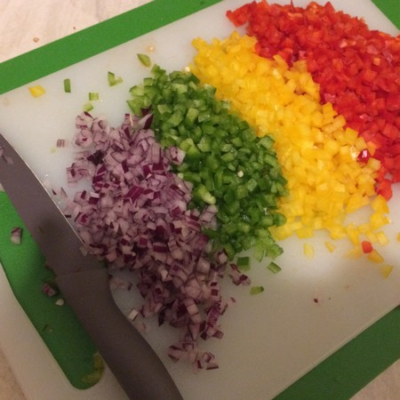
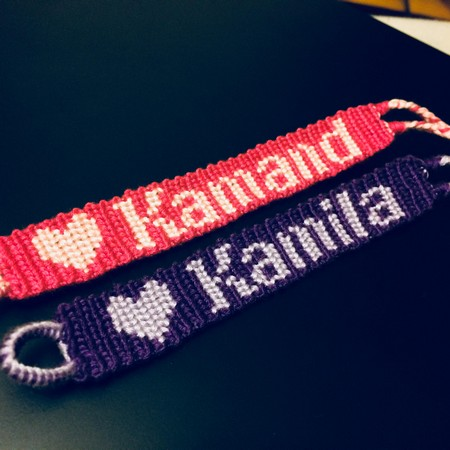

Hi, I'm Anna!
 I study genetics, and as a potential future medicine student I love to learn all about what we, humans, are made of!
I study genetics, and as a potential future medicine student I love to learn all about what we, humans, are made of!
Music
Music has been a part of my life since I can remember. I have been playing the piano for 12 years now, and over the years I also learned how to play guitar, ukulele, and even some on drums. Even though, piano will still stay my favourite - I love to sit down at my piano after a long day, and relax with any music that I can think of! (and that I am able to create:))

Food
I love cooking, even though I am not too good at it (yet)! I love anything that's colorful, looks delicious on the plate. Recently I have been obsessed about peppers, and add it to almost everything! I also enjoy baking cakes, cupkaes, muffins, and anything that has chocolate in it!

Bracelets
One of my weird hobbies is making bracelets from embroidery. I have learned how to do that in middle school, and since then I discovered all different kinds of patterns, which is a lot of fun to learn. But it requires a lot of patience! I make it for my family and friends, kids love them as gifts. I even sold a few back when I was still in school. It is a lot of fun and the best part is that you can make it whatever shape, colour and style you like!
Netflix addict
In my spare time I watch a lot of TV shows. And I mean, A LOT! I especially enjoy medical shows such as House MD, which is my personal favourite, as well as Grey's Anatomy, Scrubs, and anything medicine related. I learned a lot about unusual diseases as well as body parts I never knew existed! I also enjoy detective shows such as Monk, Bones, or X files. I really love to follow the plot and look for clues! Other then that I love comedy shows like Friends, How I Met Your Mother, The Big Bang Theory, and many others. It's a great way to unwind and 'turn your brain off' for a while!